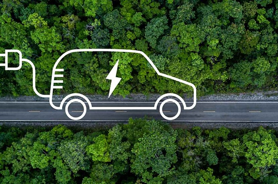

Innovación en BMW
Movilidad Eléctrica
Con el lanzamiento de la línea BMW i, BMW se ha consolidado como un líder en movilidad eléctrica, desarrollando tecnologías avanzadas para sus vehículos eléctricos que ofrecen eficiencia y alto rendimiento.
Conducción Autónoma
BMW está invirtiendo en investigación y desarrollo para hacer realidad la conducción autónoma, con sistemas avanzados que mejoran la seguridad y comodidad en carretera.
Sostenibilidad y Compromiso Ambiental
La sostenibilidad es una prioridad para BMW, que utiliza materiales reciclables y procesos eficientes en su cadena de producción, en línea con su objetivo de reducir su huella de carbono.